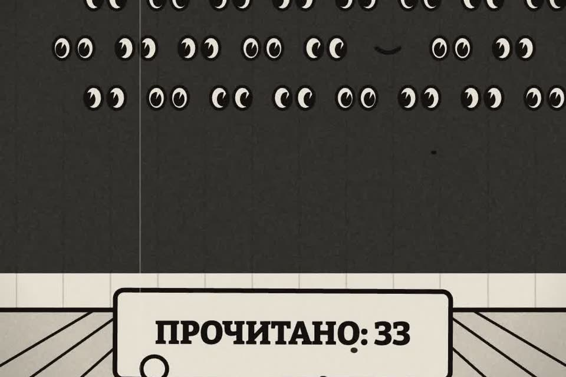

Что в чате касается лично вас
В ролике школьный чат взорвался, а нейросеть «вежливо» сдала за героя деньги на шторы. Здесь честная версия: нейросеть только читает выгрузку и говорит, что в трёхстах сообщениях касается лично вас.
- бесплатно
- Claude, ChatGPT, любой чат
- только чтение
К ролику «Клод, школьный чат взорвался» · обновлено 27 октября 2026

Нейросеть читает, пишете вы. Не давайте ей доступ к отправке сообщений и не просите «ответить за меня». Для выгрузки из Telegram нужен Telegram Desktop на компьютере.
Первый результат за 3 шага
Выгрузите чат за неделю
Нужна неделя, а не год: длинную выгрузку нейросеть дочитает хуже.
- TelegramТолько в приложении для компьютера (Telegram Desktop). Откройте чат → ⋮ в правом верхнем углу → «Экспорт истории чата». Снимите галочки с фото и видео, формат «Машиночитаемый JSON» или HTML, задайте период. Получится папка с файлом
result.jsonилиmessages.html. - WhatsAppОткройте чат → имя чата вверху → «Экспорт чата» → «Без медиафайлов». Получится файл
.txt(на iPhone — архив.zip, внутри тот же.txt).
Задайте период при экспорте или вырежьте нужные дни.
Файл result.json, messages.html или .txt с перепиской за нужные дни, без фото и видео.
Уберите лишнее
В выгрузке телефоны и имена других людей.
- Если не хотите отдавать их нейросети, замените номера через поиск-замену или удалите строки со служебными событиями («добавил», «вышел»).
- Реквизиты сборов и номера карт в сводку попадут: решайте, можно ли показывать их сервису.
В файле нет того, что вы не готовы показать сервису.
Отдайте выгрузку промпту
Приложите файл в Claude, ChatGPT или другой чат и вставьте текст ниже.
Ниже выгрузка чата «[название чата]» за период [с ... по ...].
Я в нём [кто я: родитель, сотрудник], меня зовут в чате [имя или ник].
Работай только на чтение: ничего не пиши от моего имени,
не предлагай готовых ответов в чат, пока я не попрошу.
Дай сводку из трёх частей:
1. Что требует МЕНЯ лично: где меня упомянули, задали мне вопрос,
ждут от меня ответа, денег, подписи или действия. С цитатой и датой.
2. Сроки и деньги: все даты, дедлайны, суммы и реквизиты сборов,
кто собирает и до какого числа. Если суммы противоречат друг другу,
так и напиши.
3. Остальное в три пункта: о чём спорили и чем кончилось.
Не пересказывай поздравления, стикеры и «спасибо».
Если чего-то не понял или в выгрузке нет начала разговора, скажи прямо.Тот же промпт отдельным файлом: prompts/chat.md.
Сводка из трёх частей: что требует вас лично (с цитатой и датой), сроки и деньги, остальное в три пункта. Без готовых ответов в чат, пока вы не попросите.
Если застряли
Уже написали не тудаTelegram, WhatsApp
- Telegram разрешает удалить своё сообщение у всех участников группы: долгое нажатие → «Удалить» → «Также удалить для всех».
- WhatsApp даёт «Удалить у всех» только ограниченное время после отправки (около двух суток), потом остаётся «Удалить у меня».
- Удаление не отменяет прочтения: если сообщение уже видели, лучше коротко извиниться, чем делать вид, что его не было.
- Перед жалобой проверьте название чата вверху экрана. Ролик целиком про эту секунду.
В Telegram нет «Экспорта истории чата»
Экспорт есть только в приложении для компьютера, Telegram Desktop. В телефоне его нет.
Сводка пропускает важное
Сократите период: длинную выгрузку нейросеть дочитает хуже. Спорные места проверяйте по цитатам, которые просит промпт.
Что было в ролике
Чаты, классная, мамы и Горо вымышленные. Ошибки настоящие: два похожих чата, жалоба ушла не туда, а «реагируй вежливо» без границ превратилось в действие от вашего имени.
Чего сводка не сделает
- Не видит голосовых, фото и файлов, если вы их не выгрузили и не расшифровали.
- Может пропустить сарказм и «ну-ну». Спорные места проверяйте по цитатам.
- Не платит и не отвечает за вас. И не должна.